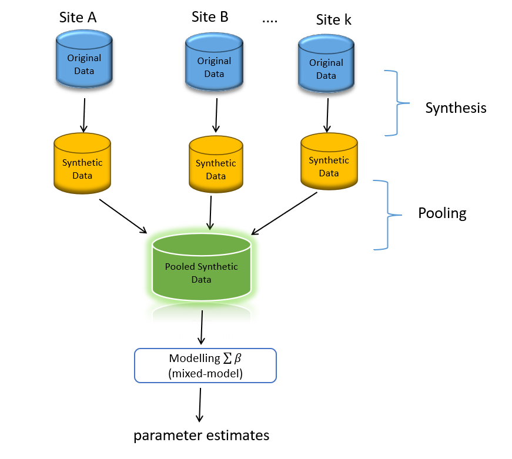
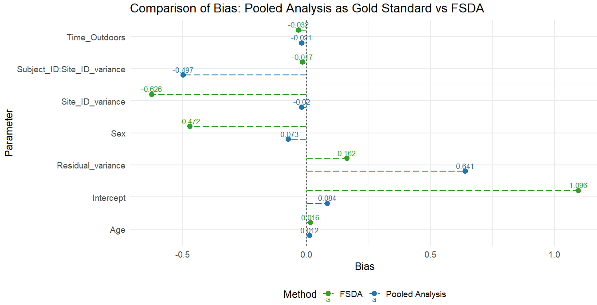
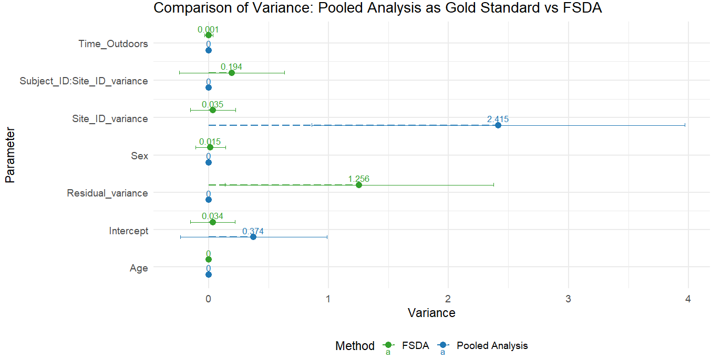
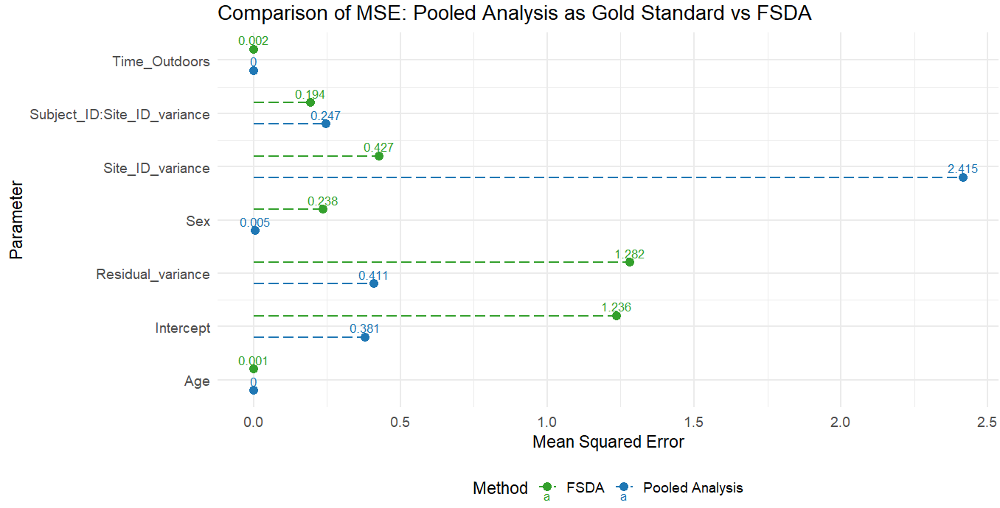

Federated Synthetic Data Analysis
Master's Thesis | University of Bremen | R | Stan | Simulation Study
Explore the Research View CVOverview
This study investigates federated synthetic data analysis as a privacy-preserving approach to statistical modelling in multi-site healthcare research.
Problem Statement
Healthcare data sharing can be restricted by privacy regulations and institutional governance requirements. Traditional pooled analysis may not be feasible across institutions. This thesis explores synthetic data generation combined with federated modelling as a potential alternative.
Research Objectives
- Evaluate bias and variance of federated synthetic data models.
- Assess statistical utility across multiple simulated sites.
- Compare performance under varying sample sizes.
- Investigate the trade-off between disclosure risk and analytical validity.
Methodology
A Monte Carlo simulation framework was implemented using mixed-effects models. Data were generated across multiple sites with heterogeneity in covariate distributions. Synthetic datasets were created using the synthpop framework.
A hierarchical mixed-effects model was considered:
Y_ij = β0 + β1 X_ij + u_j + ε_ij
u_j ~ N(0, σ²_site)
ε_ij ~ N(0, σ²)The model and simulation description should be checked against the final thesis to ensure that the displayed equations accurately represent the implemented analysis.
Simulation Design
This section presents the design used to evaluate model performance across the simulation scenarios.

Analysis Workflow
Original Data
↓
Site-level Splitting
↓
Synthetic Data Generation
↓
Mixed-Effects Model Fitting
↓
Pooling of Estimates
↓
Performance Evaluation
(Bias | Variance | MSE | Coverage | Utility)Federated Synthetic Data Analysis Workflow

Key Results
- Low bias was reported for fixed effects in the evaluated scenarios.
- Variance increased with greater heterogeneity between sites.
- Coverage was reported as stable under moderate sample sizes.
- A trade-off between privacy and statistical utility was investigated.
The findings and their interpretation should be verified against the final simulation outputs before publication on this website.
Simulation Results
Bias Comparison

Variance Comparison

Mean Squared Error Comparison

Key Contributions
- Designed a Monte Carlo simulation framework.
- Implemented a synthetic data analysis pipeline in R.
- Evaluated mixed-effects models under privacy constraints.
- Investigated analytical utility and disclosure-risk trade-offs.
Limitations
- Simplified assumptions about the linear mixed-effects structure.
- Longitudinal dependency structures were not included, if consistent with the final study.
- Limited real-world validation beyond simulation.
Research Resources
Access my master's thesis, presentation slides, and curriculum vitae.